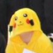
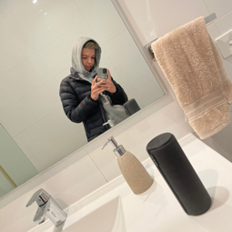

We are a small developer team that is located in Sydney, New South Wales. We are all currently developing our skills in the world of coding and this Five M server is an embodiment of our efforts so far. We've all spent numerous hours on FiveM servers role-playing and having fun times, after playing on these server we have been inspired to create our own Five M Role play server know as Tim Tam RP. This server is a way for us to develop our skills as develops while simultaneous providing the absolute best possible role-play experience in the Five M multiverse. Because of our previous exposure to the plentiful amount of role-play server around we know what works and does not work. This way out server can be the best it can possibly be if not the best the Five M to offer. We will strive to make this dream a reality. Tim Tam RP provides a realistic Australian role-play experience allowing you to role-play as you really lived in the city of Sydney. This means that all the things that can happen in real life Sydney can happen in the game as well as due to this being a game, you can embellish your role-plays to make them anything you want to as there is no real restriction on creativity. No matter how cliche it is the only limit is your mind.
"The cars we drive say a lot about us."
-Alexandra Paul
"The longer you live, the more you realise that in this reality only pain, suffering and futility exist"
–Madara Uchiha
"If you can't fly, run, if you can't run, walk, if you can't walk, crawl, but by all means.. Keep moving"
-Martin Luther King
"The greatest glory in living lies not in never falling, but in rising every time we fall"
–Nelson Mandela